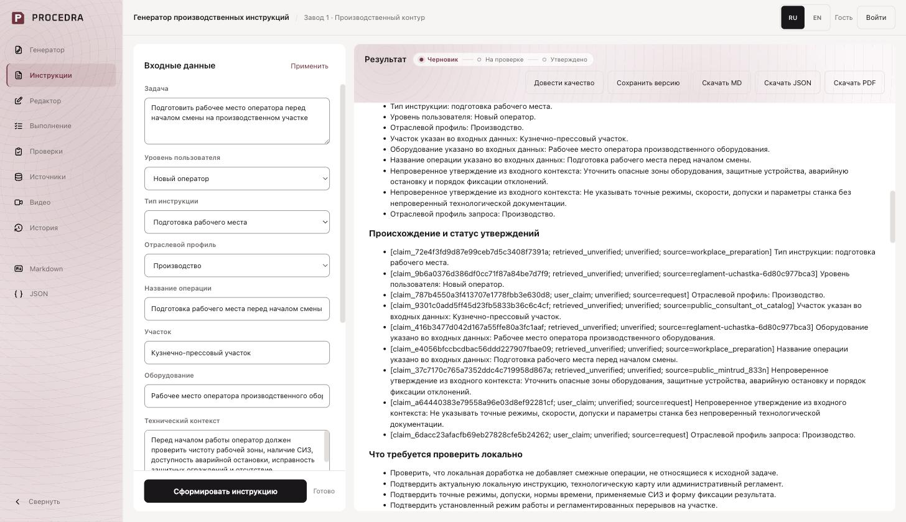
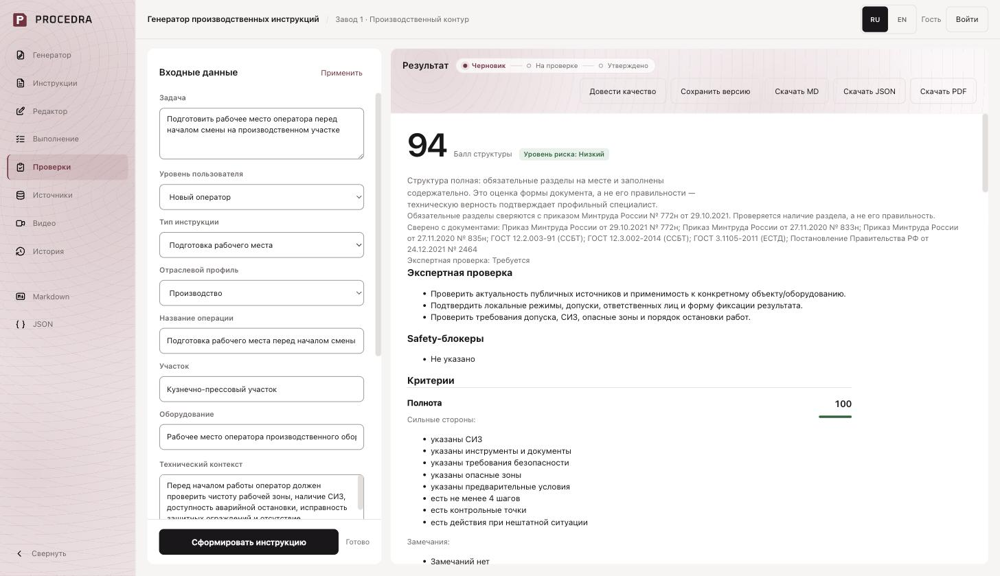
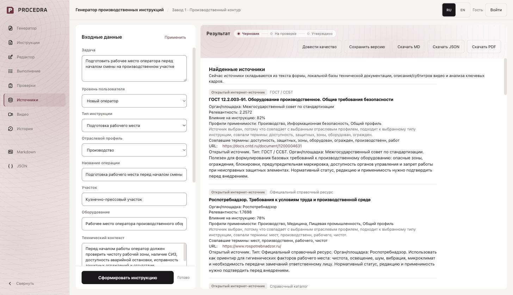
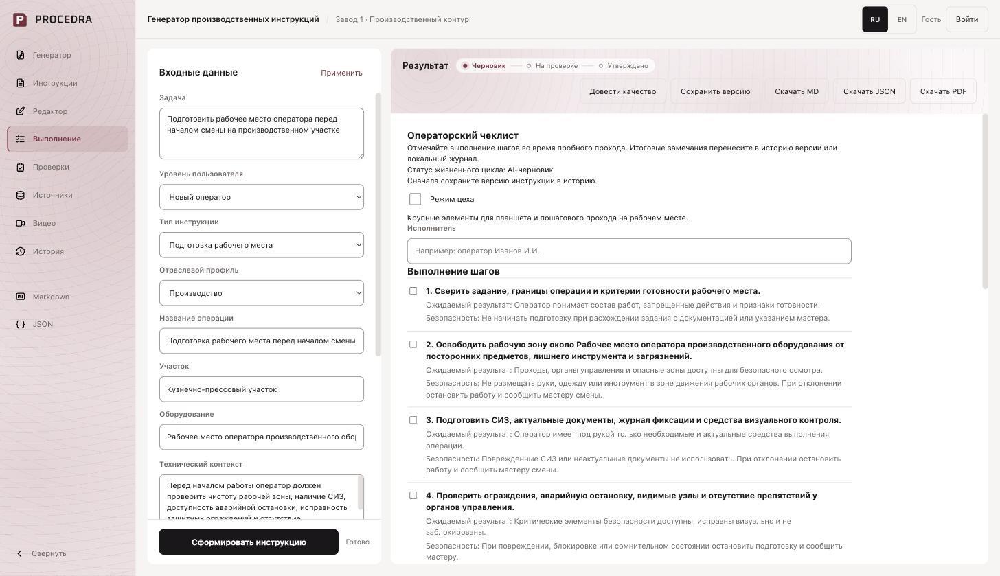
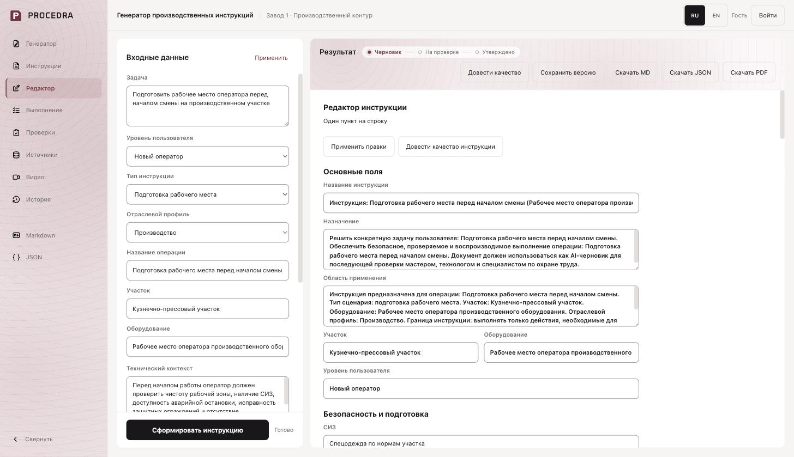
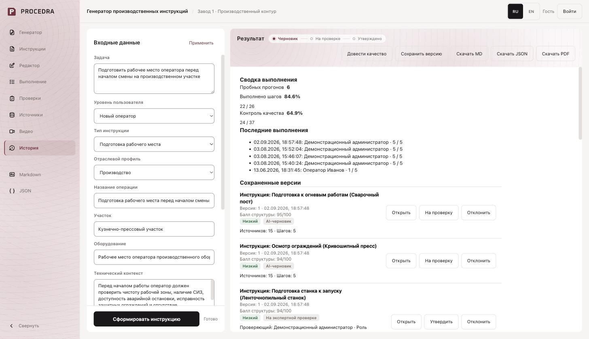
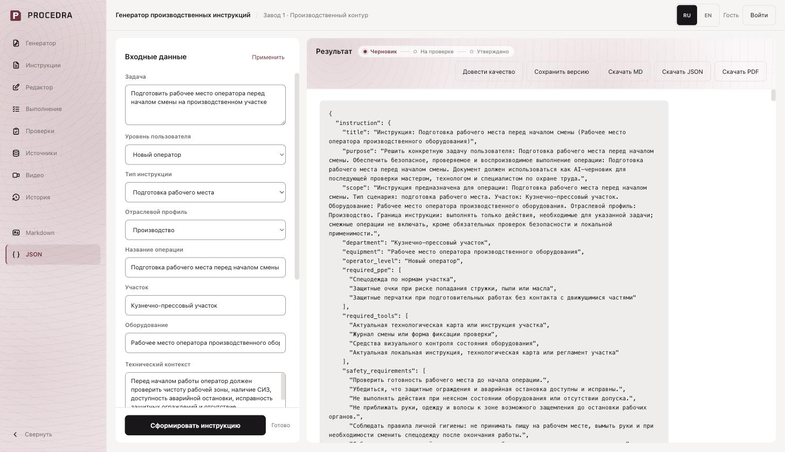

01 / Task to draft
Instruction generator
The operator supplies the task, equipment, workplace, and supporting context. A structured draft is presented alongside its status and generation mode. User input remains distinct from verified information.

02 / Traceability
Claim provenance
Claims carry identifiers and source-status labels, such as user claim or retrieved, unverified information. Source presence does not automatically establish factual correctness.

03 / Validation
Structure checks and review questions
Deterministic checks help identify missing sections and unresolved review requirements. A structure score is not a measure of technical accuracy, legal compliance, or operational safety.

04 / Supporting context
Source inspection
Reviewers can inspect retrieved references, relevance indicators, and selection reasons. Applicability and reliability must still be assessed by a qualified person.

05 / Execution workflow
Step-by-step checklist
The draft can be explored as a checklist with expected outcomes and safety prompts. These screens demonstrate the interface, not authorization to execute a real industrial task.

06 / Human review
Structured editor
A reviewer can edit purpose, scope, equipment, requirements, and individual steps, then re-run validation. The document remains a draft until the review workflow is completed.

07 / Accountability
Version history and review
Saved versions, reviewer decisions, and workflow states make changes inspectable. Approval is a recorded human decision, not a substitute for checking local applicability.

08 / Interoperability
Structured export
The same draft can be inspected as JSON or exported as Markdown and PDF for review. Public presentation materials do not include application source, proprietary prompts, or customer documents.
